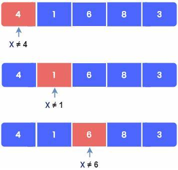

Searching Algorithm
A searching algorithm is designed to find a specific item or location within a data structure. It involves systematically examining elements in a dataset to determine whether a particular element matches the search criteria.
Types of Searching Algorithms
Based on the type of search operation, these algorithms are generally classified into two categories:
Sequential Search
Linear Search is defined as a sequential search algorithm that starts at one end and goes through each element of a list until the desired element is found, otherwise the search continues till the end of the data set.
Linear Search Algorithm

How Does Linear Search Algorithm Work?
In Linear Search Algorithm,
- Every element is considered as a potential match for the key and checked for the same.
- If any element is found equal to the key, the search is successful, and the index of that element is returned.
- If no element is found equal to the key, the search yields “No match found”.
Complexity Analysis of Linear Search
Time Complexity:
- Best Case: O(1)
- Worst Case: O(N)
- Average Case: O(N)
Auxiliary Space:
O(1), If the recursive call stack is considered then the auxiliary space will be O(logN).
Advantages of Linear Search
- Linear search can be used irrespective of whether the array is sorted or not. It can be used on arrays of any data type.
- Does not require any additional memory.
- It is a well-suited algorithm for small datasets.
Drawbacks of Linear Search
- Linear search has a time complexity of O(N), which in turn makes it slow for large datasets.
- Not suitable for large arrays.
Interval Search
These algorithms are specifically designed for searching in sorted data-structures. These type of searching algorithms are much more efficient than Linear Search as they repeatedly target the center of the search structure and divide the search space in half.
Binary Search
Example of Binary Search Algorithm
Conditions for when to apply Binary Search in a Data Structure:
- The data structure must be sorted.
- Access to any element of the data structure takes constant time.
Complexity Analysis of Binary Search
Time Complexity:
- Best Case: O(1)
- Average Case: O(log N)
- Worst Case: O(log N)
Auxiliary Space:
O(1), If the recursive call stack is considered then the auxiliary space will be O(logN).
Advantages of Binary Search
- Binary search is faster than linear search, especially for large arrays.
- More efficient than other searching algorithms with a similar time complexity, such as interpolation search or exponential search.
- Binary search is well-suited for searching large datasets that are stored in external memory, such as on a hard drive or in the cloud.
Drawbacks of Binary Search
- The array should be sorted.
- Binary search requires that the data structure being searched be stored in contiguous memory locations.
- Binary search requires that the elements of the array be comparable, meaning that they must be able to be ordered.
Applications of Binary Search
Binary search can be used as a building block for more complex algorithms used in machine learning, such as algorithms for training neural networks or finding the optimal hyperparameters for a model. It can also be used for searching in computer graphics, such as algorithms for ray tracing or texture mapping, and for searching a database.
Basic Difference between Linear Search and Binary Search
| Comparison |
Linear Search |
Binary Search |
| Search Algorithm |
Sequential search algorithm. |
Algorithm used in a sorted array by repeatedly dividing the search interval in half. |
| Time Complexity (Average Case) |
O(N) |
O(log N) |
| Efficiency |
Slower, especially for large arrays. |
Faster, especially for large arrays. |
| Data Structure |
Can be used on arrays of any data type, whether sorted or not. |
Requires the data structure to be sorted for efficient searching. |
| Memory Usage |
Does not require additional memory. |
Requires O(1) auxiliary space. |